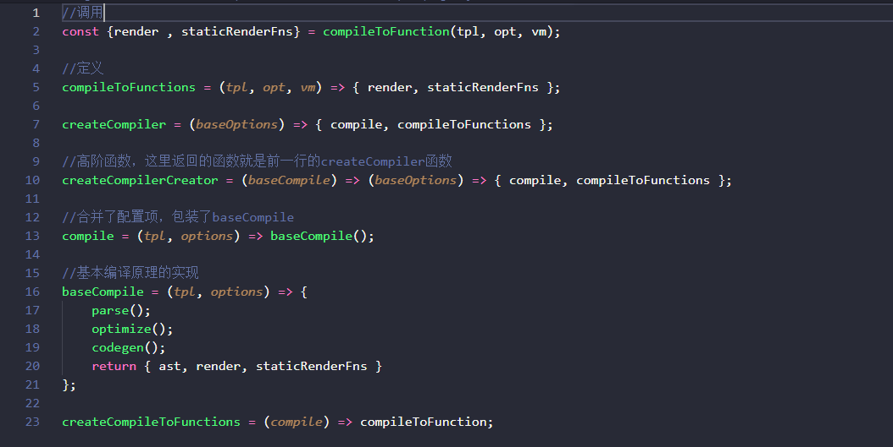
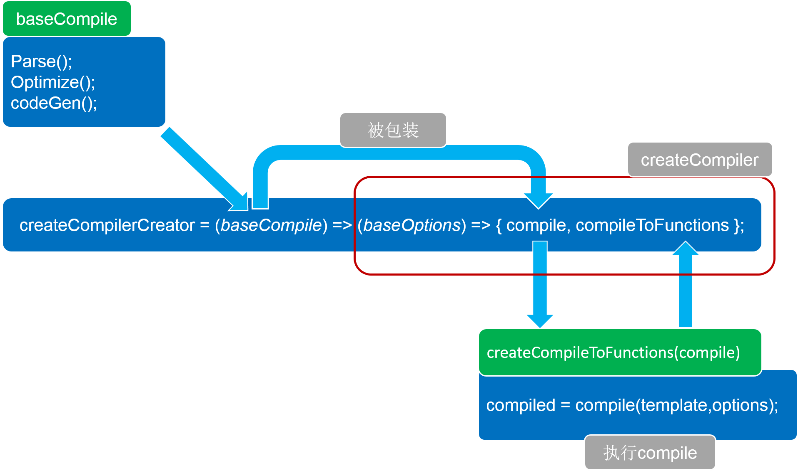

示例代码托管在：http://www.github.com/dashnowords/blogs
博客园地址：《大史住在大前端》原创博文目录
华为云社区地址：【你要的前端打怪升级指南】
compiler模块Vue框架中用于模板编译的，它的作用就是将Vue中的组件模板转换成render函数，render函数在运行时可以生成虚拟节点vnode，它是Vue中虚拟DOM树的基本实现流程。完整版的Vue是包含runtime和compiler的，也就是说模板的编译过程可以在运行时进行，这无疑是一种性能负担。Vue官方也提供了独立的runtime版本，其中只包含运行时环境，把从template到render函数的生成部分放在构建时完成（利用vue-templete-compiler模块），以提高运行时的效率。
由于跨平台需求，compiler模块的实现过程步骤稍多，不断地利用高阶函数来拆分整体逻辑，不是很容易阅读，本篇对该模块的基本流程进行一个梳理，再参考文末彩蛋推荐的电子书，就比较容易看懂了。
相关入口在实例挂载函数$mount的实现中:
Vue.prototype.$mount = function(){
const options = this.$options
//....
const { render, staticRenderFns } = compileToFunctions(template, {
shouldDecodeNewlines,
shouldDecodeNewlinesForHref,
delimiters: options.delimiters,
comments: options.comments
}, this)
options.render = render
options.staticRenderFns = staticRenderFns
//....
return mount.call(this, el, hydrating)
}可以看到实例挂载方法$mount的逻辑就是在调用mount方法前在实例的$options添加了额外的信息。此处调用的compileToFunctions方法经历的逻辑跳转了多层高阶函数，涉及文件也比较多，直接上图比较清楚：
笔者将涉及函数简化为输入输出的形式：

核心逻辑步骤如下所示：

梳理完流程，整个编译流程的宏观流程也就相对清晰了，这里为了兼顾不同平台的方法差异，将有差异的部分提取为独立的模块，然后作为函数参数注入执行函数，这种通过高阶函数来组织代码的方式能提高核心逻辑的聚合程度，如果是普通的业务逻辑，很可能会是以扁平化串联调用的形式来编写方法的，笔者个人认为两种模式没有绝对的优劣对比，虽然高阶函数看起来更高级。
分享一本非常详细的讲述Vue核心原理的开源电子书【Vue.js 技术揭秘】。